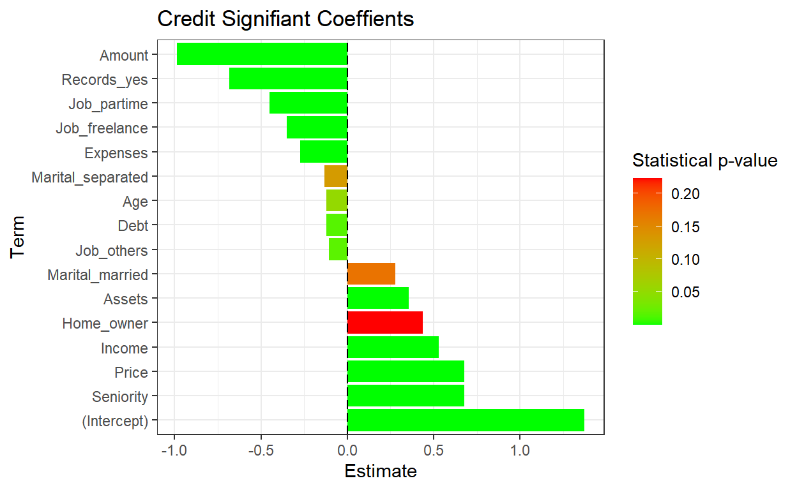

In this post we will discuss how to use recipes to build effective machine learning pipelines in R.
recipes is a built in package I found within
tidymodels. We actually wrote a section on this in our last
post showing how to 1) add roles, 2) create features, and 3) add
recipes to model workflows. In another post we will go
through the rsample package which I discovered through the
same means. However for recipes, it offers a very clean
dplyr-like syntax to pass data through before modeling
takes place. This helps for a variety of reasons:
Enough chit chat, let’s dive in and discuss what’s going on.
Rows: 333
Columns: 131
$ ACE_CD143_Angiotensin_Converti <dbl> 2.0031003, 1.5618560, 1.520~
$ ACTH_Adrenocorticotropic_Hormon <dbl> -1.3862944, -1.3862944, -1.~
$ AXL <dbl> 1.09838668, 0.68328157, -0.~
$ Adiponectin <dbl> -5.360193, -5.020686, -5.80~
$ Alpha_1_Antichymotrypsin <dbl> 1.7404662, 1.4586150, 1.193~
$ Alpha_1_Antitrypsin <dbl> -12.631361, -11.909882, -13~
$ Alpha_1_Microglobulin <dbl> -2.577022, -3.244194, -2.88~
$ Alpha_2_Macroglobulin <dbl> -72.65029, -154.61228, -136~
$ Angiopoietin_2_ANG_2 <dbl> 1.06471074, 0.74193734, 0.8~
$ Angiotensinogen <dbl> 2.510547, 2.457283, 1.97636~
$ Apolipoprotein_A_IV <dbl> -1.427116, -1.660731, -1.66~
$ Apolipoprotein_A1 <dbl> -7.402052, -7.047017, -7.68~
$ Apolipoprotein_A2 <dbl> -0.26136476, -0.86750057, -~
$ Apolipoprotein_B <dbl> -4.624044, -6.747507, -3.97~
$ Apolipoprotein_CI <dbl> -1.2729657, -1.2729657, -1.~
$ Apolipoprotein_CIII <dbl> -2.312635, -2.343407, -2.74~
$ Apolipoprotein_D <dbl> 2.0794415, 1.3350011, 1.335~
$ Apolipoprotein_E <dbl> 3.7545215, 3.0971187, 2.753~
$ Apolipoprotein_H <dbl> -0.15734908, -0.57539617, -~
$ B_Lymphocyte_Chemoattractant_BL <dbl> 2.2969819, 1.6731213, 1.673~
$ BMP_6 <dbl> -2.200744, -1.728053, -2.06~
$ Beta_2_Microglobulin <dbl> 0.69314718, 0.47000363, 0.3~
$ Betacellulin <int> 34, 53, 49, 52, 67, 51, 41,~
$ C_Reactive_Protein <dbl> -4.074542, -6.645391, -8.04~
$ CD40 <dbl> -0.7964147, -1.2733760, -1.~
$ CD5L <dbl> 0.09531018, -0.67334455, 0.~
$ Calbindin <dbl> 33.21363, 25.27636, 22.1660~
$ Calcitonin <dbl> 1.3862944, 3.6109179, 2.116~
$ CgA <dbl> 397.6536, 465.6759, 347.863~
$ Clusterin_Apo_J <dbl> 3.555348, 3.044522, 2.77258~
$ Complement_3 <dbl> -10.36305, -16.10824, -16.1~
$ Complement_Factor_H <dbl> 3.5737252, 3.6000471, 4.474~
$ Connective_Tissue_Growth_Factor <dbl> 0.5306283, 0.5877867, 0.641~
$ Cortisol <dbl> 10.0, 12.0, 10.0, 14.0, 11.~
$ Creatine_Kinase_MB <dbl> -1.710172, -1.751002, -1.38~
$ Cystatin_C <dbl> 9.041922, 9.067624, 8.95415~
$ EGF_R <dbl> -0.1354543, -0.3700474, -0.~
$ EN_RAGE <dbl> -3.688879, -3.816713, -4.75~
$ ENA_78 <dbl> -1.349543, -1.356595, -1.39~
$ Eotaxin_3 <int> 53, 62, 62, 44, 64, 57, 64,~
$ FAS <dbl> -0.08338161, -0.52763274, -~
$ FSH_Follicle_Stimulation_Hormon <dbl> -0.6516715, -1.6272839, -1.~
$ Fas_Ligand <dbl> 3.1014922, 2.9788133, 1.360~
$ Fatty_Acid_Binding_Protein <dbl> 2.5208712, 2.2477966, 0.906~
$ Ferritin <dbl> 3.329165, 3.932959, 3.17687~
$ Fetuin_A <dbl> 1.2809338, 1.1939225, 1.410~
$ Fibrinogen <dbl> -7.035589, -8.047190, -7.19~
$ GRO_alpha <dbl> 1.381830, 1.372438, 1.41267~
$ Gamma_Interferon_induced_Monokin <dbl> 2.949822, 2.721793, 2.76223~
$ Glutathione_S_Transferase_alpha <dbl> 1.0641271, 0.8670202, 0.889~
$ HB_EGF <dbl> 6.559746, 8.754531, 7.74546~
$ HCC_4 <dbl> -3.036554, -4.074542, -3.64~
$ Hepatocyte_Growth_Factor_HGF <dbl> 0.58778666, 0.53062825, 0.0~
$ I_309 <dbl> 3.433987, 3.135494, 2.39789~
$ ICAM_1 <dbl> -0.1907787, -0.4620172, -0.~
$ IGF_BP_2 <dbl> 5.609472, 5.347108, 5.18178~
$ IL_11 <dbl> 5.121987, 4.936704, 4.66591~
$ IL_13 <dbl> 1.282549, 1.269463, 1.27413~
$ IL_16 <dbl> 4.192081, 2.876338, 2.61610~
$ IL_17E <dbl> 5.731246, 6.705891, 4.14932~
$ IL_1alpha <dbl> -6.571283, -8.047190, -8.18~
$ IL_3 <dbl> -3.244194, -3.912023, -4.64~
$ IL_4 <dbl> 2.484907, 2.397895, 1.82454~
$ IL_5 <dbl> 1.09861229, 0.69314718, -0.~
$ IL_6 <dbl> 0.26936976, 0.09622438, 0.1~
$ IL_6_Receptor <dbl> 0.64279595, 0.43115645, 0.0~
$ IL_7 <dbl> 4.8050453, 3.7055056, 1.005~
$ IL_8 <dbl> 1.711325, 1.675557, 1.69139~
$ IP_10_Inducible_Protein_10 <dbl> 6.242223, 5.686975, 5.04985~
$ IgA <dbl> -6.812445, -6.377127, -6.31~
$ Insulin <dbl> -0.6258253, -0.9431406, -1.~
$ Kidney_Injury_Molecule_1_KIM_1 <dbl> -1.204295, -1.197703, -1.19~
$ LOX_1 <dbl> 1.7047481, 1.5260563, 1.163~
$ Leptin <dbl> -1.5290628, -1.4660558, -1.~
$ Lipoprotein_a <dbl> -4.268698, -4.933674, -5.84~
$ MCP_1 <dbl> 6.740519, 6.849066, 6.76734~
$ MCP_2 <dbl> 1.9805094, 1.8088944, 0.400~
$ MIF <dbl> -1.237874, -1.897120, -2.30~
$ MIP_1alpha <dbl> 4.968453, 3.690160, 4.04950~
$ MIP_1beta <dbl> 3.258097, 3.135494, 2.39789~
$ MMP_2 <dbl> 4.478566, 3.781473, 2.86663~
$ MMP_3 <dbl> -2.207275, -2.465104, -2.30~
$ MMP10 <dbl> -3.270169, -3.649659, -2.73~
$ MMP7 <dbl> -3.7735027, -5.9681907, -4.~
$ Myoglobin <dbl> -1.89711998, -0.75502258, -~
$ NT_proBNP <dbl> 4.553877, 4.219508, 4.24849~
$ NrCAM <dbl> 5.003946, 5.209486, 4.74493~
$ Osteopontin <dbl> 5.356586, 6.003887, 5.01728~
$ PAI_1 <dbl> 1.00350156, -0.03059880, 0.~
$ PAPP_A <dbl> -2.902226, -2.813276, -2.93~
$ PLGF <dbl> 4.442651, 4.025352, 4.51086~
$ PYY <dbl> 3.218876, 3.135494, 2.89037~
$ Pancreatic_polypeptide <dbl> 0.5787808, 0.3364722, -0.89~
$ Prolactin <dbl> 0.00000000, -0.51082562, -0~
$ Prostatic_Acid_Phosphatase <dbl> -1.620527, -1.739232, -1.63~
$ Protein_S <dbl> -1.784998, -2.463991, -2.25~
$ Pulmonary_and_Activation_Regulat <dbl> -0.8439701, -2.3025851, -1.~
$ RANTES <dbl> -6.214608, -6.938214, -6.64~
$ Resistin <dbl> -16.475315, -16.025283, -16~
$ S100b <dbl> 1.5618560, 1.7566212, 1.435~
$ SGOT <dbl> -0.94160854, -0.65392647, 0~
$ SHBG <dbl> -1.897120, -1.560648, -2.20~
$ SOD <dbl> 5.609472, 5.814131, 5.72358~
$ Serum_Amyloid_P <dbl> -5.599422, -6.119298, -5.38~
$ Sortilin <dbl> 4.908629, 5.478731, 3.81018~
$ Stem_Cell_Factor <dbl> 4.174387, 3.713572, 3.43398~
$ TGF_alpha <dbl> 8.649098, 11.331619, 10.858~
$ TIMP_1 <dbl> 15.204651, 11.266499, 12.28~
$ TNF_RII <dbl> -0.06187540, -0.32850407, -~
$ TRAIL_R3 <dbl> -0.1829004, -0.5007471, -0.~
$ TTR_prealbumin <dbl> 2.944439, 2.833213, 2.94443~
$ Tamm_Horsfall_Protein_THP <dbl> -3.095810, -3.111190, -3.16~
$ Thrombomodulin <dbl> -1.340566, -1.675252, -1.53~
$ Thrombopoietin <dbl> -0.1026334, -0.6733501, -0.~
$ Thymus_Expressed_Chemokine_TECK <dbl> 4.149327, 3.810182, 2.79199~
$ Thyroid_Stimulating_Hormone <dbl> -3.863233, -4.828314, -4.99~
$ Thyroxine_Binding_Globulin <dbl> -1.4271164, -1.6094379, -1.~
$ Tissue_Factor <dbl> 2.04122033, 2.02814825, 1.4~
$ Transferrin <dbl> 3.332205, 2.890372, 2.89037~
$ Trefoil_Factor_3_TFF3 <dbl> -3.381395, -3.912023, -3.72~
$ VCAM_1 <dbl> 3.258097, 2.708050, 2.63905~
$ VEGF <dbl> 22.03456, 18.60184, 17.4761~
$ Vitronectin <dbl> -0.04082199, -0.38566248, -~
$ von_Willebrand_Factor <dbl> -3.146555, -3.863233, -3.54~
$ age <dbl> 0.9876238, 0.9861496, 0.986~
$ tau <dbl> 6.297754, 6.659294, 6.27098~
$ p_tau <dbl> 4.348108, 4.859967, 4.40024~
$ Ab_42 <dbl> 12.019678, 11.015759, 12.30~
$ male <dbl> 0, 0, 1, 0, 0, 1, 1, 1, 0, ~
$ Genotype <fct> E3E3, E3E4, E3E4, E3E4, E3E~
$ Class <fct> Control, Control, Control, ~This data is entirely numeric with a response variable
that is binary. We can also see it is a factor.
# A tibble: 2 x 3
Class n prop
<fct> <int> <dbl>
1 Impaired 91 0.273
2 Control 242 0.727ad_recipe =
recipe(Class ~ tau + VEGF, data = ad_data) %>%
step_normalize(all_numeric_predictors())
ad_recipeRecipe
Inputs:
role #variables
outcome 1
predictor 2
Operations:
Centering and scaling for all_numeric_predictors()With the recipes package, you create a standard recipe
for the model itself. This will contain outcomes and
predictors. These are synonymous with dependent and
independent variables.
Then once you create the recipe formula, each step will
do some type of work against it. For example, this step
normalized all predictors. Pretty slick! And easy..
I really like this modeldata package. The developers often use it and it has a rich spread of unique data. For this example it is credit card information, which is very interesting, and contains enough nominal information to be as practical as it gets out there in the real world.
library(recipes)
library(rsample)
library(modeldata)
data("credit_data")
set.seed(55)
credit_data %>% glimpseRows: 4,454
Columns: 14
$ Status <fct> good, good, bad, good, good, good, good, good, goo~
$ Seniority <int> 9, 17, 10, 0, 0, 1, 29, 9, 0, 0, 6, 7, 8, 19, 0, 0~
$ Home <fct> rent, rent, owner, rent, rent, owner, owner, paren~
$ Time <int> 60, 60, 36, 60, 36, 60, 60, 12, 60, 48, 48, 36, 60~
$ Age <int> 30, 58, 46, 24, 26, 36, 44, 27, 32, 41, 34, 29, 30~
$ Marital <fct> married, widow, married, single, single, married, ~
$ Records <fct> no, no, yes, no, no, no, no, no, no, no, no, no, n~
$ Job <fct> freelance, fixed, freelance, fixed, fixed, fixed, ~
$ Expenses <int> 73, 48, 90, 63, 46, 75, 75, 35, 90, 90, 60, 60, 75~
$ Income <int> 129, 131, 200, 182, 107, 214, 125, 80, 107, 80, 12~
$ Assets <int> 0, 0, 3000, 2500, 0, 3500, 10000, 0, 15000, 0, 400~
$ Debt <int> 0, 0, 0, 0, 0, 0, 0, 0, 0, 0, 0, 0, 2500, 260, 0, ~
$ Amount <int> 800, 1000, 2000, 900, 310, 650, 1600, 200, 1200, 1~
$ Price <int> 846, 1658, 2985, 1325, 910, 1645, 1800, 1093, 1957~It looks like our outcome is the Status
with several other numeric and nominal
predictors.
Status n prop
1 bad 1254 0.2815447
2 good 3200 0.7184553train_test_split = credit_data %>% initial_split(prop = 3/4, strata = Status)
credit_train = training(train_test_split)
credit_test = testing(train_test_split)
credit_train %>% glimpseRows: 3,340
Columns: 14
$ Status <fct> bad, bad, bad, bad, bad, bad, bad, bad, bad, bad, ~
$ Seniority <int> 10, 0, 0, 0, 2, 3, 0, 0, 1, 5, 2, 1, 4, 1, 0, 25, ~
$ Home <fct> owner, parents, other, ignore, rent, owner, NA, ow~
$ Time <int> 36, 48, 18, 48, 60, 24, 48, 36, 54, 48, 36, 48, 42~
$ Age <int> 46, 41, 21, 36, 25, 23, 37, 23, 36, 31, 27, 29, 27~
$ Marital <fct> married, married, single, married, single, married~
$ Records <fct> yes, no, yes, no, no, no, no, no, no, no, no, yes,~
$ Job <fct> freelance, partime, partime, partime, fixed, fixed~
$ Expenses <int> 90, 90, 35, 45, 46, 75, 35, 45, 70, 44, 48, 85, 35~
$ Income <int> 200, 80, 50, 130, 107, 85, NA, 122, 99, 90, 128, 1~
$ Assets <int> 3000, 0, 0, 750, 0, 5000, NA, 2500, 0, 0, 0, 0, 0,~
$ Debt <int> 0, 0, 0, 0, 0, 0, NA, 0, 0, 0, 0, 0, 0, 0, 0, 0, 0~
$ Amount <int> 2000, 1200, 400, 1100, 1500, 600, 1500, 400, 950, ~
$ Price <int> 2985, 1468, 500, 1511, 2189, 1600, 1850, 400, 950,~credit_test %>% glimpseRows: 1,114
Columns: 14
$ Status <fct> good, good, good, good, bad, good, good, good, bad~
$ Seniority <int> 17, 6, 8, 19, 1, 12, 14, 10, 0, 2, 3, 14, 8, 10, 4~
$ Home <fct> rent, owner, owner, priv, owner, owner, priv, owne~
$ Time <int> 60, 48, 60, 36, 60, 36, 24, 24, 60, 60, 12, 24, 48~
$ Age <int> 58, 34, 30, 37, 45, 54, 51, 56, 32, 43, 37, 55, 31~
$ Marital <fct> widow, married, married, married, married, married~
$ Records <fct> no, no, no, no, no, no, no, no, yes, no, no, no, n~
$ Job <fct> fixed, freelance, fixed, fixed, partime, fixed, pa~
$ Expenses <int> 48, 60, 75, 75, 105, 60, 75, 45, 45, 75, 60, 90, 9~
$ Income <int> 131, 125, 199, 170, 112, 130, 198, 208, 142, 71, 1~
$ Assets <int> 0, 4000, 5000, 3500, 2000, 4000, 1000, 13500, 7000~
$ Debt <int> 0, 0, 2500, 260, 500, 0, 0, 0, 3000, 0, 0, 0, 0, 0~
$ Amount <int> 1000, 1150, 1500, 600, 600, 700, 450, 500, 1250, 1~
$ Price <int> 1658, 1577, 1650, 940, 1332, 2100, 650, 1560, 1566~Notice that we have a nice 3/4 split. Also that there are some nasty
NAs in our data.
Status Seniority Home Time Age Marital Records
1.0000000 1.0000000 0.9982036 1.0000000 1.0000000 0.9997006 1.0000000
Job Expenses Income Assets Debt Amount Price
0.9997006 1.0000000 0.9116766 0.9886228 0.9955090 1.0000000 1.0000000 We can use recipes to impute this missing data instead of dropping it.
This does no justice to the examples to follow, but gives a feel for how this will start to look as we create recipes, add steps, then prep, then bake it it all together for a model (or analysis).
rec_obj = recipe(Status ~ ., data = credit_train)
rec_objRecipe
Inputs:
role #variables
outcome 1
predictor 13There are so many options for pre-processing steps. The manual page
?selections will provide them all. I headed over that way
and collected a few I found:
step_pcastep_centerstep_dummy (allows for step_interact to be
effective)step_interactstep_logstep_rmA way to explore even more steps is below,
[1] "step_arrange" "step_bagimpute"
[3] "step_bin2factor" "step_BoxCox"
[5] "step_bs" "step_center"
[7] "step_classdist" "step_corr"
[9] "step_count" "step_cut"
[11] "step_date" "step_depth"
[13] "step_discretize" "step_dummy"
[15] "step_dummy_extract" "step_dummy_multi_choice"
[17] "step_factor2string" "step_filter"
[19] "step_filter_missing" "step_geodist"
[21] "step_harmonic" "step_holiday"
[23] "step_hyperbolic" "step_ica"
[25] "step_impute_bag" "step_impute_knn"
[27] "step_impute_linear" "step_impute_lower"
[29] "step_impute_mean" "step_impute_median"
[31] "step_impute_mode" "step_impute_roll"
[33] "step_indicate_na" "step_integer"
[35] "step_interact" "step_intercept"
[37] "step_inverse" "step_invlogit"
[39] "step_isomap" "step_knnimpute"
[41] "step_kpca" "step_kpca_poly"
[43] "step_kpca_rbf" "step_lag"
[45] "step_lincomb" "step_log"
[47] "step_logit" "step_lowerimpute"
[49] "step_meanimpute" "step_medianimpute"
[51] "step_modeimpute" "step_mutate"
[53] "step_mutate_at" "step_naomit"
[55] "step_nnmf" "step_nnmf_sparse"
[57] "step_normalize" "step_novel"
[59] "step_ns" "step_num2factor"
[61] "step_nzv" "step_ordinalscore"
[63] "step_other" "step_pca"
[65] "step_percentile" "step_pls"
[67] "step_poly" "step_profile"
[69] "step_range" "step_ratio"
[71] "step_regex" "step_relevel"
[73] "step_relu" "step_rename"
[75] "step_rename_at" "step_rm"
[77] "step_rollimpute" "step_sample"
[79] "step_scale" "step_select"
[81] "step_shuffle" "step_slice"
[83] "step_spatialsign" "step_sqrt"
[85] "step_string2factor" "step_time"
[87] "step_unknown" "step_unorder"
[89] "step_window" "step_YeoJohnson"
[91] "step_zv" And then finally, you call the prep() function at the
end of the chain and this will cook it up and return your final
dataset.
You can also select variables using some build in functions and the
typical dplyr and tidyselect syntax.
contains()ends_with()everything()matches()num_range()starts_with()one_of()all_of()all_outcomes()any_of()all_predictions()has_role() - useful if you set the role IDs in a setup
stepall_nominal()all_numeric()has_type()all_nominal_predictors() - useful with
step_dummiesall_numeric_predictors() - useful with
step_center and step_pcaimputed = rec_obj %>%
step_impute_knn(all_predictors())
imputedRecipe
Inputs:
role #variables
outcome 1
predictor 13
Operations:
K-nearest neighbor imputation for all_predictors()ind_vars = imputed %>%
step_dummy(all_nominal_predictors())
ind_varsRecipe
Inputs:
role #variables
outcome 1
predictor 13
Operations:
K-nearest neighbor imputation for all_predictors()
Dummy variables from all_nominal_predictors()standardized = ind_vars %>%
step_center(all_numeric_predictors()) %>%
step_scale(all_numeric_predictors())
standardizedRecipe
Inputs:
role #variables
outcome 1
predictor 13
Operations:
K-nearest neighbor imputation for all_predictors()
Dummy variables from all_nominal_predictors()
Centering for all_numeric_predictors()
Scaling for all_numeric_predictors()trained_rec = prep(standardized, training = credit_train)
trained_recRecipe
Inputs:
role #variables
outcome 1
predictor 13
Training data contained 3340 data points and 321 incomplete rows.
Operations:
K-nearest neighbor imputation for Seniority, Home, Time, Age, Marital,... [trained]
Dummy variables from Home, Marital, Records, Job [trained]
Centering for Seniority, Time, Age, Expenses, Incom... [trained]
Scaling for Seniority, Time, Age, Expenses, Incom... [trained]train_data = bake(trained_rec, new_data = credit_train)
test_data = bake(trained_rec, new_data = credit_test)
train_data %>% glimpseRows: 3,340
Columns: 23
$ Seniority <dbl> 0.2326022, -0.9756267, -0.9756267, -0.9756~
$ Time <dbl> -0.7046334, 0.1143941, -1.9331747, 0.11439~
$ Age <dbl> 0.819168853, 0.363377561, -1.459787609, -0~
$ Expenses <dbl> 1.7475123, 1.7475123, -1.0452600, -0.53748~
$ Income <dbl> 0.75001838, -0.78930019, -1.17412983, -0.1~
$ Assets <dbl> -0.21062879, -0.48150940, -0.48150940, -0.~
$ Debt <dbl> -0.2615791, -0.2615791, -0.2615791, -0.261~
$ Amount <dbl> 2.06539627, 0.35400235, -1.35739158, 0.140~
$ Price <dbl> 2.44185759, 0.01922555, -1.52665963, 0.087~
$ Status <fct> bad, bad, bad, bad, bad, bad, bad, bad, ba~
$ Home_other <dbl> -0.2750668, -0.2750668, 3.6343927, -0.2750~
$ Home_owner <dbl> 1.0616266, -0.9416688, -0.9416688, -0.9416~
$ Home_parents <dbl> -0.4693061, 2.1301673, -0.4693061, -0.4693~
$ Home_priv <dbl> -0.2358159, -0.2358159, -0.2358159, -0.235~
$ Home_rent <dbl> -0.5338767, -0.5338767, -0.5338767, -0.533~
$ Marital_married <dbl> 0.6146338, 0.6146338, -1.6264981, 0.614633~
$ Marital_separated <dbl> -0.1774584, -0.1774584, -0.1774584, -0.177~
$ Marital_single <dbl> -0.5324876, -0.5324876, 1.8774157, -0.5324~
$ Marital_widow <dbl> -0.1194505, -0.1194505, -0.1194505, -0.119~
$ Records_yes <dbl> 2.215860, -0.451157, 2.215860, -0.451157, ~
$ Job_freelance <dbl> 1.8235759, -0.5482089, -0.5482089, -0.5482~
$ Job_others <dbl> -0.198784, -0.198784, -0.198784, -0.198784~
$ Job_partime <dbl> -0.3332834, 2.9995509, 2.9995509, 2.999550~test_data %>% glimpseRows: 1,114
Columns: 23
$ Seniority <dbl> 1.078362381, -0.250689410, -0.009043629, 1~
$ Time <dbl> 0.9334216, 0.1143941, 0.9334216, -0.704633~
$ Age <dbl> 1.913067955, -0.274730248, -0.639363282, -~
$ Expenses <dbl> -0.3851502, 0.2241819, 0.9858471, 0.985847~
$ Income <dbl> -0.135089799, -0.212055727, 0.737190723, 0~
$ Assets <dbl> -0.48150940, -0.12033525, -0.03004171, -0.~
$ Debt <dbl> -0.26157915, -0.26157915, 1.64153404, -0.0~
$ Amount <dbl> -0.07384614, 0.24704023, 0.99577507, -0.92~
$ Price <dbl> 0.32265342, 0.19329733, 0.30987751, -0.823~
$ Status <fct> good, good, good, good, bad, good, good, g~
$ Home_other <dbl> -0.2750668, -0.2750668, -0.2750668, -0.275~
$ Home_owner <dbl> -0.9416688, 1.0616266, 1.0616266, -0.94166~
$ Home_parents <dbl> -0.4693061, -0.4693061, -0.4693061, -0.469~
$ Home_priv <dbl> -0.2358159, -0.2358159, -0.2358159, 4.2393~
$ Home_rent <dbl> 1.8725310, -0.5338767, -0.5338767, -0.5338~
$ Marital_married <dbl> -1.6264981, 0.6146338, 0.6146338, 0.614633~
$ Marital_separated <dbl> -0.1774584, -0.1774584, -0.1774584, -0.177~
$ Marital_single <dbl> -0.5324876, -0.5324876, -0.5324876, -0.532~
$ Marital_widow <dbl> 8.3691608, -0.1194505, -0.1194505, -0.1194~
$ Records_yes <dbl> -0.451157, -0.451157, -0.451157, -0.451157~
$ Job_freelance <dbl> -0.5482089, 1.8235759, -0.5482089, -0.5482~
$ Job_others <dbl> -0.198784, -0.198784, -0.198784, -0.198784~
$ Job_partime <dbl> -0.3332834, -0.3332834, -0.3332834, -0.333~ Seniority Time Age
1 1 1
Expenses Income Assets
1 1 1
Debt Amount Price
1 1 1
Status Home_other Home_owner
1 1 1
Home_parents Home_priv Home_rent
1 1 1
Marital_married Marital_separated Marital_single
1 1 1
Marital_widow Records_yes Job_freelance
1 1 1
Job_others Job_partime
1 1 Seniority Time Age
1 1 1
Expenses Income Assets
1 1 1
Debt Amount Price
1 1 1
Status Home_other Home_owner
1 1 1
Home_parents Home_priv Home_rent
1 1 1
Marital_married Marital_separated Marital_single
1 1 1
Marital_widow Records_yes Job_freelance
1 1 1
Job_others Job_partime
1 1 trained_rec <- trained_rec %>%
check_missing(contains("Marital"))
trained_recRecipe
Inputs:
role #variables
outcome 1
predictor 13
Training data contained 3340 data points and 321 incomplete rows.
Operations:
K-nearest neighbor imputation for Seniority, Home, Time, Age, Marital,... [trained]
Dummy variables from Home, Marital, Records, Job [trained]
Centering for Seniority, Time, Age, Expenses, Incom... [trained]
Scaling for Seniority, Time, Age, Expenses, Incom... [trained]
Check missing values for contains("Marital")It’s always easier for me to view everything all at once. So here is
the full example chained together in the dplyr syntax.
Rows: 4,454
Columns: 14
$ Status <fct> good, good, bad, good, good, good, good, good, goo~
$ Seniority <int> 9, 17, 10, 0, 0, 1, 29, 9, 0, 0, 6, 7, 8, 19, 0, 0~
$ Home <fct> rent, rent, owner, rent, rent, owner, owner, paren~
$ Time <int> 60, 60, 36, 60, 36, 60, 60, 12, 60, 48, 48, 36, 60~
$ Age <int> 30, 58, 46, 24, 26, 36, 44, 27, 32, 41, 34, 29, 30~
$ Marital <fct> married, widow, married, single, single, married, ~
$ Records <fct> no, no, yes, no, no, no, no, no, no, no, no, no, n~
$ Job <fct> freelance, fixed, freelance, fixed, fixed, fixed, ~
$ Expenses <int> 73, 48, 90, 63, 46, 75, 75, 35, 90, 90, 60, 60, 75~
$ Income <int> 129, 131, 200, 182, 107, 214, 125, 80, 107, 80, 12~
$ Assets <int> 0, 0, 3000, 2500, 0, 3500, 10000, 0, 15000, 0, 400~
$ Debt <int> 0, 0, 0, 0, 0, 0, 0, 0, 0, 0, 0, 0, 2500, 260, 0, ~
$ Amount <int> 800, 1000, 2000, 900, 310, 650, 1600, 200, 1200, 1~
$ Price <int> 846, 1658, 2985, 1325, 910, 1645, 1800, 1093, 1957~# Create train-test split
train_test_split = credit_data %>% initial_split(prop = 3/4, strata = Status)
credit_train = training(train_test_split)
credit_test = testing(train_test_split)
# Create a recipe w/ formula
credit_recipe =
recipe(Status ~ ., data = credit_train) %>%
step_impute_knn(all_predictors()) %>%
step_dummy(all_nominal_predictors()) %>%
step_center(all_numeric_predictors()) %>%
step_scale(all_numeric_predictors()) %>%
prep(training = credit_train)
train_data =
credit_recipe %>%
bake(new_data = credit_train)
test_data =
credit_recipe %>%
bake(new_data = credit_test)
train_data %>% head# A tibble: 6 x 23
Seniority Time Age Expen~1 Income Assets Debt Amount Price
<dbl> <dbl> <dbl> <dbl> <dbl> <dbl> <dbl> <dbl> <dbl>
1 0.240 -0.733 0.805 1.74 0.792 -0.207 -0.291 2.07 2.51
2 -0.987 -1.97 -1.47 -1.04 -1.21 -0.462 -0.291 -1.37 -1.58
3 -0.741 0.915 -1.11 -0.485 -0.446 -0.462 -0.291 0.992 1.20
4 -0.864 0.915 0.714 2.50 -0.380 -0.292 0.145 -0.941 -0.208
5 -0.987 0.0908 -0.0143 -1.04 -0.193 -0.394 -0.291 0.992 0.644
6 -0.864 0.503 -0.105 0.729 -0.553 -0.462 -0.291 -0.189 -0.836
# ... with 14 more variables: Status <fct>, Home_other <dbl>,
# Home_owner <dbl>, Home_parents <dbl>, Home_priv <dbl>,
# Home_rent <dbl>, Marital_married <dbl>, Marital_separated <dbl>,
# Marital_single <dbl>, Marital_widow <dbl>, Records_yes <dbl>,
# Job_freelance <dbl>, Job_others <dbl>, Job_partime <dbl>, and
# abbreviated variable name 1: Expenses
# i Use `colnames()` to see all variable namestest_data %>% head# A tibble: 6 x 23
Senio~1 Time Age Expen~2 Income Assets Debt Amount Price
<dbl> <dbl> <dbl> <dbl> <dbl> <dbl> <dbl> <dbl> <dbl>
1 1.10 0.915 1.90 -0.384 -0.127 -0.462 -0.291 -0.0820 0.328
2 -0.987 0.0908 0.350 1.74 -0.806 -0.462 -0.291 0.348 0.0159
3 -0.251 0.0908 -0.288 0.223 -0.207 -0.122 -0.291 0.240 0.195
4 0.853 -1.56 1.35 -1.04 2.52 0.939 -0.291 0.992 1.22
5 -0.987 0.0908 -0.105 -0.535 -0.140 -0.398 -0.291 0.133 0.0866
6 2.32 0.915 0.350 0.931 -0.00713 -0.462 -0.291 -0.189 0.0636
# ... with 14 more variables: Status <fct>, Home_other <dbl>,
# Home_owner <dbl>, Home_parents <dbl>, Home_priv <dbl>,
# Home_rent <dbl>, Marital_married <dbl>, Marital_separated <dbl>,
# Marital_single <dbl>, Marital_widow <dbl>, Records_yes <dbl>,
# Job_freelance <dbl>, Job_others <dbl>, Job_partime <dbl>, and
# abbreviated variable names 1: Seniority, 2: Expenses
# i Use `colnames()` to see all variable namesWhat if we wanted to do PCA on just our categorical columns after imputation? Then get those as numeric, united with the rest of the numeric variables, center, scale, prep, and bake as usual?
# Create a recipe w/ formula
credit_pca_recipe =
# Formula
recipe(Status ~ ., data = credit_train) %>%
# Add ID roles, if rows have unique identifiers
# update_role(flight, time_hour, new_role = "ID") %>%
# Impute missing data
step_impute_knn(all_predictors()) %>%
# Make dummies for factors
step_dummy(all_nominal_predictors()) %>%
# Drop those dummies using PCA
step_pca(contains("_"), threshold = .90) %>%
# Center&Scale
step_center(all_numeric_predictors()) %>%
step_scale(all_numeric_predictors()) %>%
# Drop zero variance columns
step_zv(all_numeric_predictors()) %>%
# Prep from the training data
prep(training = credit_train)
train_data_pca =
credit_pca_recipe %>%
bake(new_data = credit_train)
test_data_pca =
credit_pca_recipe %>%
bake(new_data = credit_test)
train_data_pca %>% head# A tibble: 6 x 17
Seniority Time Age Expen~1 Income Assets Debt Amount Price
<dbl> <dbl> <dbl> <dbl> <dbl> <dbl> <dbl> <dbl> <dbl>
1 0.240 -0.733 0.805 1.74 0.792 -0.207 -0.291 2.07 2.51
2 -0.987 -1.97 -1.47 -1.04 -1.21 -0.462 -0.291 -1.37 -1.58
3 -0.741 0.915 -1.11 -0.485 -0.446 -0.462 -0.291 0.992 1.20
4 -0.864 0.915 0.714 2.50 -0.380 -0.292 0.145 -0.941 -0.208
5 -0.987 0.0908 -0.0143 -1.04 -0.193 -0.394 -0.291 0.992 0.644
6 -0.864 0.503 -0.105 0.729 -0.553 -0.462 -0.291 -0.189 -0.836
# ... with 8 more variables: Status <fct>, PC1 <dbl>, PC2 <dbl>,
# PC3 <dbl>, PC4 <dbl>, PC5 <dbl>, PC6 <dbl>, PC7 <dbl>, and
# abbreviated variable name 1: Expenses
# i Use `colnames()` to see all variable namestest_data_pca %>% head# A tibble: 6 x 17
Senio~1 Time Age Expen~2 Income Assets Debt Amount Price
<dbl> <dbl> <dbl> <dbl> <dbl> <dbl> <dbl> <dbl> <dbl>
1 1.10 0.915 1.90 -0.384 -0.127 -0.462 -0.291 -0.0820 0.328
2 -0.987 0.0908 0.350 1.74 -0.806 -0.462 -0.291 0.348 0.0159
3 -0.251 0.0908 -0.288 0.223 -0.207 -0.122 -0.291 0.240 0.195
4 0.853 -1.56 1.35 -1.04 2.52 0.939 -0.291 0.992 1.22
5 -0.987 0.0908 -0.105 -0.535 -0.140 -0.398 -0.291 0.133 0.0866
6 2.32 0.915 0.350 0.931 -0.00713 -0.462 -0.291 -0.189 0.0636
# ... with 8 more variables: Status <fct>, PC1 <dbl>, PC2 <dbl>,
# PC3 <dbl>, PC4 <dbl>, PC5 <dbl>, PC6 <dbl>, PC7 <dbl>, and
# abbreviated variable names 1: Seniority, 2: Expenses
# i Use `colnames()` to see all variable namesAbsolutely ridiculous. You can just specify what columns you want,
then it will drop the dimensions on them for you and keep moving. Let’s
table this credit_recipe_pca for now.
It’s only natural now to build a classification model. We will be referencing our example from the tidymodels post.
library(tidymodels)
lr_mod <- logistic_reg() %>%
set_engine("glm")
# Cross validation set from train
folds = vfold_cv(credit_train, v = 10)
# Workflow to incorporate folds
credit_workflow_rs =
workflows::workflow() %>%
workflows::add_model(lr_mod) %>%
workflows::add_recipe(credit_recipe) %>%
tune::fit_resamples(folds)
# See performance
collect_metrics(credit_workflow_rs)# A tibble: 2 x 6
.metric .estimator mean n std_err .config
<chr> <chr> <dbl> <int> <dbl> <chr>
1 accuracy binary 0.795 10 0.00743 Preprocessor1_Model1
2 roc_auc binary 0.829 10 0.00590 Preprocessor1_Model1This could be done kind of manually by building the model, predicting
out values, then seeing how probabilities stack against the
roc_auc and labels against accuracy. We will
leave this for another dya.
# Workflow for whole train set
credit_workflow =
workflows::workflow() %>%
workflows::add_model(lr_mod) %>%
workflows::add_recipe(credit_recipe)
# Train on the whole now
credit_fit =
credit_workflow %>%
fit(data = credit_train)
tidy(credit_fit)# A tibble: 23 x 5
term estimate std.error statistic p.value
<chr> <dbl> <dbl> <dbl> <dbl>
1 (Intercept) 1.37 0.0549 25.0 1.12e-137
2 Seniority 0.678 0.0700 9.69 3.19e- 22
3 Time 0.00568 0.0588 0.0967 9.23e- 1
4 Age -0.122 0.0631 -1.94 5.28e- 2
5 Expenses -0.273 0.0580 -4.72 2.41e- 6
6 Income 0.529 0.0614 8.61 7.11e- 18
7 Assets 0.356 0.0927 3.85 1.20e- 4
8 Debt -0.121 0.0501 -2.42 1.57e- 2
9 Amount -0.985 0.0948 -10.4 2.54e- 25
10 Price 0.677 0.0932 7.26 3.80e- 13
# ... with 13 more rows
# i Use `print(n = ...)` to see more rowsWhat was our response?
credit_data %>% glimpseRows: 4,454
Columns: 14
$ Status <fct> good, good, bad, good, good, good, good, good, goo~
$ Seniority <int> 9, 17, 10, 0, 0, 1, 29, 9, 0, 0, 6, 7, 8, 19, 0, 0~
$ Home <fct> rent, rent, owner, rent, rent, owner, owner, paren~
$ Time <int> 60, 60, 36, 60, 36, 60, 60, 12, 60, 48, 48, 36, 60~
$ Age <int> 30, 58, 46, 24, 26, 36, 44, 27, 32, 41, 34, 29, 30~
$ Marital <fct> married, widow, married, single, single, married, ~
$ Records <fct> no, no, yes, no, no, no, no, no, no, no, no, no, n~
$ Job <fct> freelance, fixed, freelance, fixed, fixed, fixed, ~
$ Expenses <int> 73, 48, 90, 63, 46, 75, 75, 35, 90, 90, 60, 60, 75~
$ Income <int> 129, 131, 200, 182, 107, 214, 125, 80, 107, 80, 12~
$ Assets <int> 0, 0, 3000, 2500, 0, 3500, 10000, 0, 15000, 0, 400~
$ Debt <int> 0, 0, 0, 0, 0, 0, 0, 0, 0, 0, 0, 0, 2500, 260, 0, ~
$ Amount <int> 800, 1000, 2000, 900, 310, 650, 1600, 200, 1200, 1~
$ Price <int> 846, 1658, 2985, 1325, 910, 1645, 1800, 1093, 1957~'data.frame': 4454 obs. of 1 variable:
$ Status: Factor w/ 2 levels "bad","good": 2 2 1 2 2 2 2 2 2 1 ...Right, good and bad credit. The levels start with bad, then go to good.
tidy(credit_fit) %>% filter(p.value <= 0.25) %>%
ggplot(., aes(fill=p.value)) +
geom_col(aes(x=reorder(term, -estimate), y=estimate)) +
geom_hline(yintercept=0, linetype="longdash", color = "black") +
coord_flip() +
scale_fill_gradient(low = "green", high = "red") +
theme_bw() +
labs(fill = "Statistical p-value", x = "Term", y = "Estimate") +
ggtitle("Credit Signifiant Coeffients")
https://recipes.tidymodels.org/